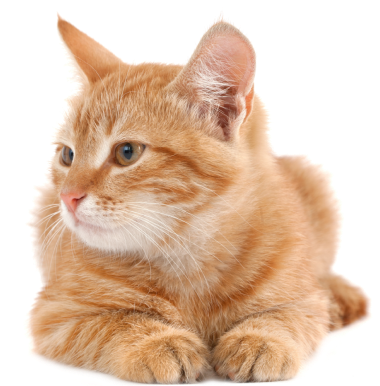

ejemplo@gmail.com
(809) 123-4567


Inicio
Servicios
Testimonios
Contacto
Nosotros
App Móvil
SERVICIOS
Cuidado Dental
Dado que los gatos no suelen permitir el cepillado diario de sus dientes, es probable que en algún momento de su vida necesiten una limpieza dental.
En cada examen anual, revisaremos los dientes y encías de tu gato para determinar si es necesario realizar una limpieza. Mantener los dientes limpios es fundamental, ya que la acumulación de sarro puede provocar bacterias e infecciones. Si la infección llega a la raíz del diente, este deberá ser extraído. Además, los gatos suelen desarrollar lesiones reabsortivas, que erosionan el esmalte dental y pueden ser extremadamente dolorosas. Los dientes con este tipo de lesiones deben extraerse para aliviar el dolor.
Las limpiezas dentales se realizan bajo anestesia. Nuestro equipo toma radiografías de todos los dientes y utiliza un escalador ultrasónico para eliminar el sarro de forma suave. Una vez finalizada la limpieza, la Dra. Cacciottoli mide las bolsas alrededor de los dientes y, basándose en las radiografías y el examen físico, determina si alguno necesita ser extraído. Si es necesario extraer dientes, lo hacemos en ese momento.
Nos aseguramos de que tu gato no sienta dolor durante el procedimiento y te proporcionaremos medicación adicional para el manejo del dolor en casa, asegurando que se mantenga cómodo mientras sana tras las extracciones.
En cada examen anual, revisaremos los dientes y encías de tu gato para determinar si es necesario realizar una limpieza. Mantener los dientes limpios es fundamental, ya que la acumulación de sarro puede provocar bacterias e infecciones. Si la infección llega a la raíz del diente, este deberá ser extraído. Además, los gatos suelen desarrollar lesiones reabsortivas, que erosionan el esmalte dental y pueden ser extremadamente dolorosas. Los dientes con este tipo de lesiones deben extraerse para aliviar el dolor.
Las limpiezas dentales se realizan bajo anestesia. Nuestro equipo toma radiografías de todos los dientes y utiliza un escalador ultrasónico para eliminar el sarro de forma suave. Una vez finalizada la limpieza, la Dra. Cacciottoli mide las bolsas alrededor de los dientes y, basándose en las radiografías y el examen físico, determina si alguno necesita ser extraído. Si es necesario extraer dientes, lo hacemos en ese momento.
Nos aseguramos de que tu gato no sienta dolor durante el procedimiento y te proporcionaremos medicación adicional para el manejo del dolor en casa, asegurando que se mantenga cómodo mientras sana tras las extracciones.

TESTIMONIOS
De nuestros visitantes
“Estas personas son el equipo de veterinarios amantes de los animales más increíble con el que mi esposa y yo hemos tenido el placer de trabajar. Se especializan en medicina felina y hacen todo lo posible para asegurarse de que los miembros peludos de su familia reciban el mejor cuidado posible. Los hemos utilizado durante años. ¡Reciben mi más alta recomendación!”
- Alguien
“¡El personal aquí es maravilloso! La Dra. Cacciottoli es estupenda, se preocupa genuinamente por asegurarse de que los pacientes tengan una visita lo más libre de estrés posible y también dedica una buena cantidad de tiempo a explicarles a los ansiosos padres de gatitos cómo cuidarlos. Sus precios son razonables y el personal de apoyo es excelente. ¡Definitivamente recomiendo Cat Clinic para las necesidades de sus bebés peludos!”



- Otra persona